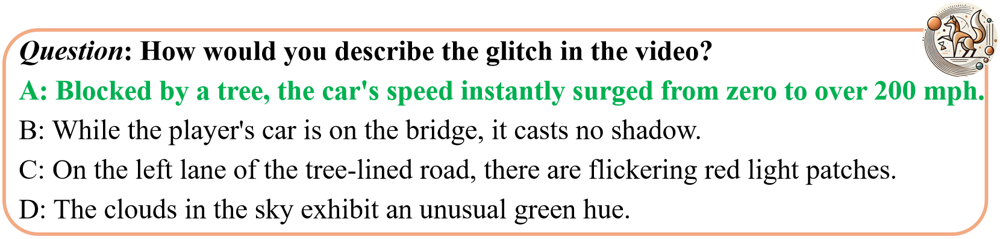
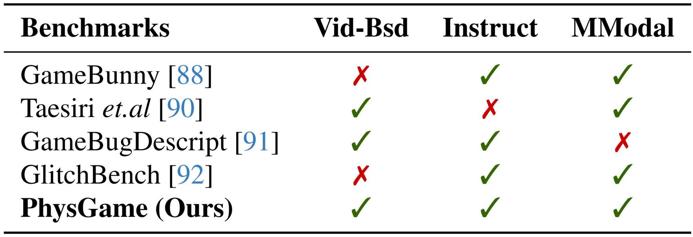

This leaderboard is sorted by AVG. To view other sorted results, please click on the corresponding cell.
Data Category
 Mechanics
Mechanics
Kinematics
Optics
Material

Benchmark Comparison
Comparison with existing benchmarks for video LLMs in terms of the video number (#Videos), the average video duration (Len.), the number of QA pair (#QA Pairs), the average QA pair tokens (QA Tokens), the manually/automatic annotation manner (M/A), whether the benchmarks are gameplay video based (Game-Bsd), whether the questions are physical commonsense classified (Phys-Clsf), and whether the benchmarks contain meta information (Meta-info).

Comparison with existing gameplay video benchmarks in terms of whether they are video-based (Vid-Bsd), whether they follow an instructional format (Instruct), and support multi-modal evaluations (MModal).